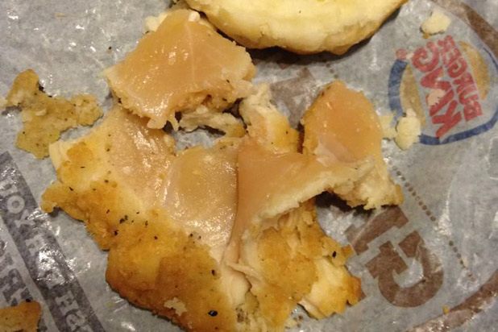
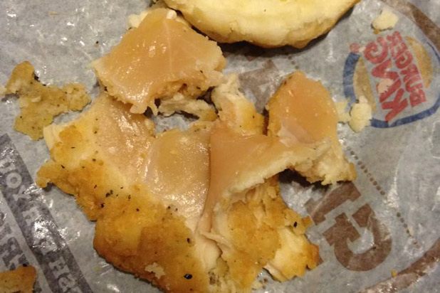

Eating the right food can boost your energy levels. So eating a nice healthy breakfast before you take off to work or school for the day goes a long way.
Those who follow a healthy, well-balanced diet reduce their risk of chronic diseases, such as diabetes, heart disease and cancer. Aim to consume a diet rich in fruits, vegetables, whole grains and unsaturated fats.
Healthy eating starts with learning new ways to eat, such as adding more fresh fruits, vegetables, and whole grains and cutting back on foods that have a lot of fat, salt, and sugar. A change to healthier eating also includes learning about balance, variety, and moderation.
___________________________________________________________________________________________________________________________________________________________________________________________________________________________________
 
